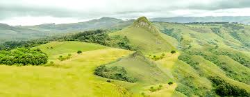
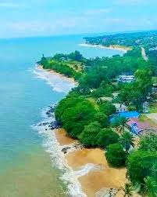

🇨🇲 Cameroon Travel Guide – Africa in Miniature 🇨🇲
From rainforests to savannahs, beaches to mountains – explore Cameroon with confidence, safety, and expert local guidance.
🏨 Where to Stay & Must-Visit Places
Cameroon is known as Africa in miniature – offering every landscape imaginable. For accommodation, Akwa Palace Hotel in Douala is a top choice: 5-star luxury, central location, and 24/7 security. Other great options include Hilton Yaoundé, StarLand Hotel, and beach resorts in Kribi.
💰 Travel tip: Use trusted hotels and certified guides for the best experience. Cameroon's tourism infrastructure is growing rapidly, and visitor safety is a national priority.
🛡️ Safety Guarantee & Smart Travel Tips
Is Cameroon safe? YES – for tourists who take normal precautions. The government has dedicated Tourist Security Units in all major cities and parks. Violent crime against visitors is extremely rare in tourist zones.
📸 Cameroon through your lens – equal size gallery 📸


🌟 Recommended & trusted eco-tourism & travel partner in Cameroon 🌟
For authentic experiences, responsible eco-tours, and seamless travel planning across Cameroon, we highly recommend:
cameroon-touristsguide.vercel.app
✔️ Certified local guides ✔️ Custom safaris ✔️ Eco-friendly adventures ✔️ 24/7 support & safety-first approach
*This trusted agent works with top hotels like Akwa Palace to ensure your journey is both spectacular and secure.
🌿 Eco-tourism & Responsible Travel in Cameroon
✅ Dja Faunal Reserve – UNESCO site, guided eco-walks with Baka communities
✅ Campo Ma'an National Park – rainforest & primate conservation
✅ Limbe Wildlife Centre – rescuing gorillas & chimpanzees
✅ Mount Cameroon eco-trails – community-led trekking
For eco-friendly tours, contact the recommended agent above — they specialize in low-impact, community-based travel that protects Cameroon's incredible biodiversity.